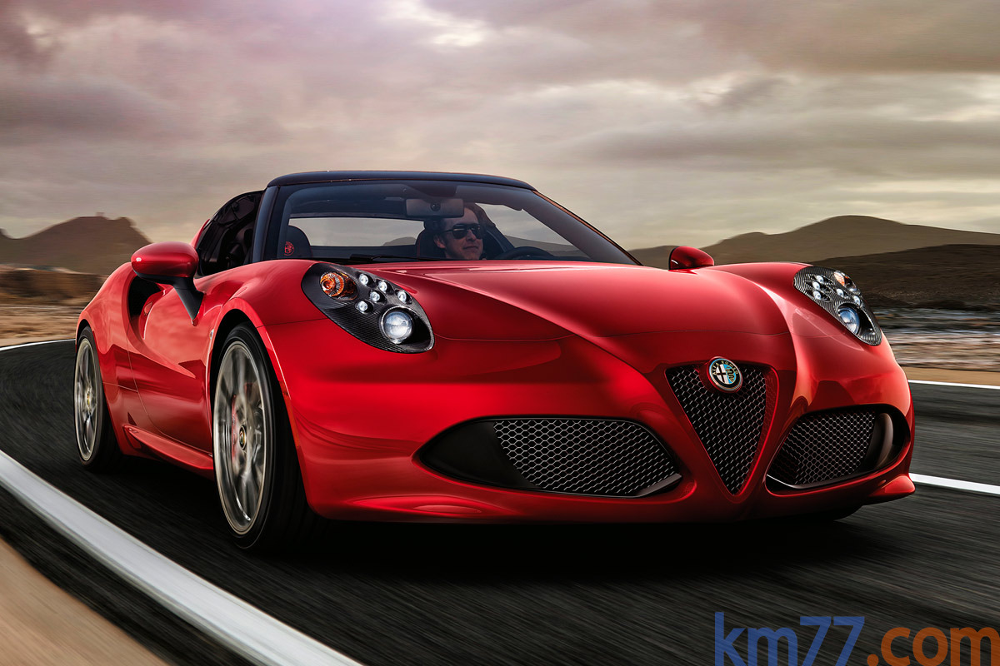

El Alfa Romeo 4C es un cupé de dos plazas de 3,99 metros de longitud con un motor de gasolina de 241 CV colocado detrás del habitáculo y tracción en las ruedas traseras. Desde septiembre de 2015 está en venta por 66.200 euros.
Alfa Romeo ha incorporado de serie elementos que hasta entonces eran opcionales, como los faros de ledes, el sistema de sonido HiFi, el programador de velocidad o los sensores de proximidad traseros. También hay una variante con carrocería descapotable que tratamos por separado en este artículo.
El 4C es muy ligero para lo corriente hoy en día. Alfa Romeo ha conseguido ese peso bajo utilizando materiales ligeros en la estructura (como la fibra de carbono), reduciendo casi al máximo los recubrimientos del habitáculo, añadiendo poco equipamiento de confort y casi ningún lujo. Los ejemplos más claros de la falta de equipamiento son que el aire acondicionado, la radio y los retrovisores calefactados son opciones (eso si, sin coste) y que no puede llevar dirección asistida, ni más airbags que dos frontales.
El interior es sencillo por materiales y ajustes. Al carecer casi por completo de guarnecidos (las alfombrillas son opcionales), casi todo lo que está alrededor de los ocupantes es duro. Otros detalles que denotan que el fabricante ha buscado la máxima ligereza es que la parte inferior del salpicadero está sin cubrir, y que los tiradores de las puertas son un asa de cuero.
El motor del 4C tiene cuatro cilindros y 1750 cm^2 de cilindrada, un turbocompresor, inyección directa y distribución variable en admisión y escape. Da 251 CV a 6000 rpm y 350 Nm de 2200 a 4250 rpm. La inyección directa es mediante inyectores de siete orificios a un máximo de 200 bar. La distribución es mediante correa. Ésta mueve unos variadores de fase en los árboles de admisión y escape cuyo funcionamiento se puede adelantar o retrasar 25 grados. El turbocompresor, de Worg Warner, genera una sobrepresión absoluta de 2,5 bar y tiene tres sistemas de refrigeración: aceite, liquido y aire para evitar que el exceso de calor lo dañee, una bomba eléctrica entra en funcionamiento cuando se para el motor.
El 4C puede acelerar de 0 a 100 km/h en 4,5 segundos y alcanzar una velocidad máxima de 258 km/h. Por tamaño, disposición del motor y tipo de tracción, el coche más semejante al 4C es el Lotus Elise S. La suspensión es de paralelogramo deformable delante (un doble triángulo) y McPherson detrás. Opcionalmente hay un kit que modifica la amortiguación y la estabilizadora trasera. Delante es posible ajustar la convergencia, mientras que detrás se puede regular tanto la convergencia como la caida. Las ruedas son de distinta anchura y diámetro en cada eje (hay dos combinaciones de llantas posible, 17 pulgadas delante y 18 detrás o de 18 y 19 pulgadas). En 2015, Alfa Romeo sacó una nueva variante Spider del 4C, en el que su configuración técnica no cambia.